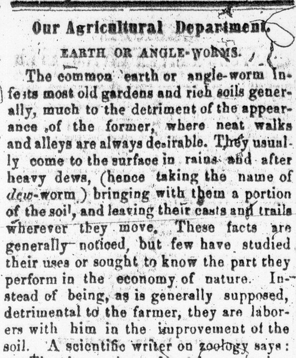
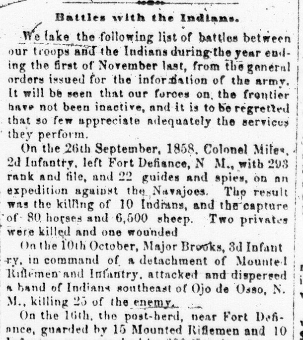

Column 1, and sometimes column 2, carried random news items, sometimes mixing local, national, international, and human interest stories on a single page. On February 1, for example, agricultural advice reprinted from the Country Gentleman appeared alongside an item describing battles between United States troops and Native Americans in the West.
|  |  |
Columns 3-6, again, were advertisements. Unlike ads appearing on other pages of
the Valley Spirit, however, information on page 8 clearly appealed especially to
agricultural, commercial, and legal interests. Market information appeared here (with
commodity prices from Chambersburg, and usually from Philadelphia and Baltimore as
well), as did a yearly almanac calendar. The remainder of the columns were generally
filled with information about banks, land sales (local and regional), court cases, and
other legal notices, such as estate divisions.